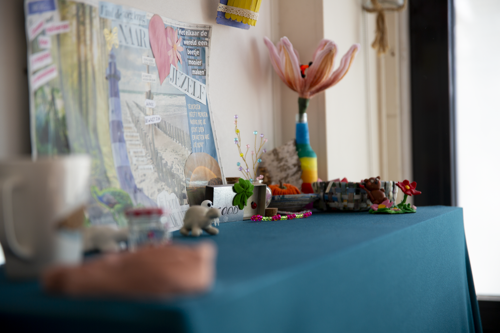
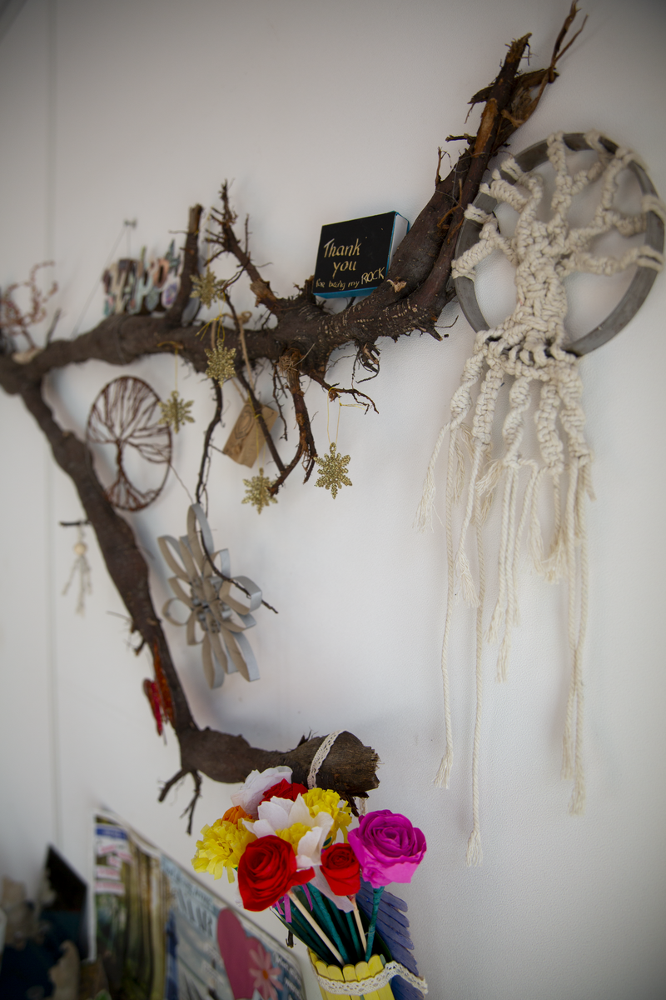
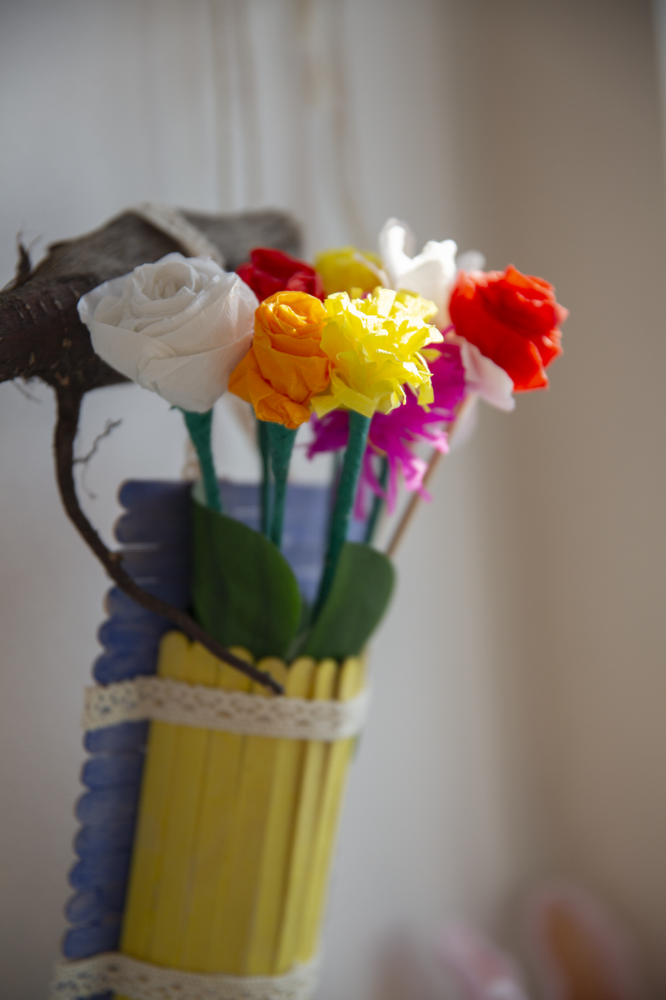

Op zoek naar iets unieks, een creatieve decoratie of heb je een bijzonder idee dat je wilt laten uitvoeren? Bij Cre8tive, de creatieve afdeling van Kr8tig in Weert, denken we graag met je mee. Van kleine creatieve producten en decoraties tot bijzondere opdrachten voor particulieren, bedrijven, organisaties, evenementen en festivals.
Geen opdracht is hetzelfde. Soms begint het met een concreet idee, soms met een thema, materiaal of een vraag. Samen kijken we naar de mogelijkheden en gaan we aan de slag om er iets bijzonders van te maken.
Bij Cre8tive werken we bijvoorbeeld aan:
Heb je zelf een idee dat hier niet tussen staat? Juist dan horen we het graag. We denken graag mee over wat mogelijk is.
Iets nieuws maken hoeft niet altijd met nieuwe materialen. Bij Cre8tive kijken we graag naar wat er al beschikbaar is en hoe we materialen op een verrassende manier opnieuw kunnen gebruiken.
Touw, oude doeken, restmaterialen of andere materialen kunnen zo een compleet nieuwe bestemming krijgen in een decoratie, kunstzinnig object of klantopdracht. Op die manier komen creativiteit en circulariteit samen en ontstaan unieke producten met een eigen verhaal.
Deelnemers werken samen met begeleiders aan creatieve projecten en opdrachten van echte klanten. Ze bedenken oplossingen, proberen verschillende materialen en technieken uit en ervaren hoe een idee stap voor stap verandert in een eindproduct.
Daarbij ontwikkelen zij niet alleen hun creativiteit en praktische vaardigheden. Ook samenwerken, plannen, keuzes maken, omgaan met feedback en verantwoordelijkheid nemen komen in de praktijk aan bod.
Voor jou levert dat iets origineels op dat met aandacht is gemaakt. Voor onze deelnemers biedt iedere opdracht een kans om hun talenten te ontdekken, nieuwe vaardigheden te ontwikkelen en te ervaren dat wat zij maken daadwerkelijk wordt gebruikt of gezien.
Zoek je iets bijzonders voor jezelf, je bedrijf, organisatie, evenement of festival? Leg je idee gerust aan ons voor. Van een kleine creatieve opdracht tot bijzondere aankleding op maat: we kijken graag samen naar wat we ervan kunnen maken.
Je vindt Cre8tive, de creatieve afdeling van Kr8tig, aan de Parallelweg 169 in Weert.
Voor afspraken of informatie kun je contact opnemen via i.vanhagen@kr8tig.nl.
Openingstijden: dinsdag & donderdag van 12.00 tot 16.00 uur.